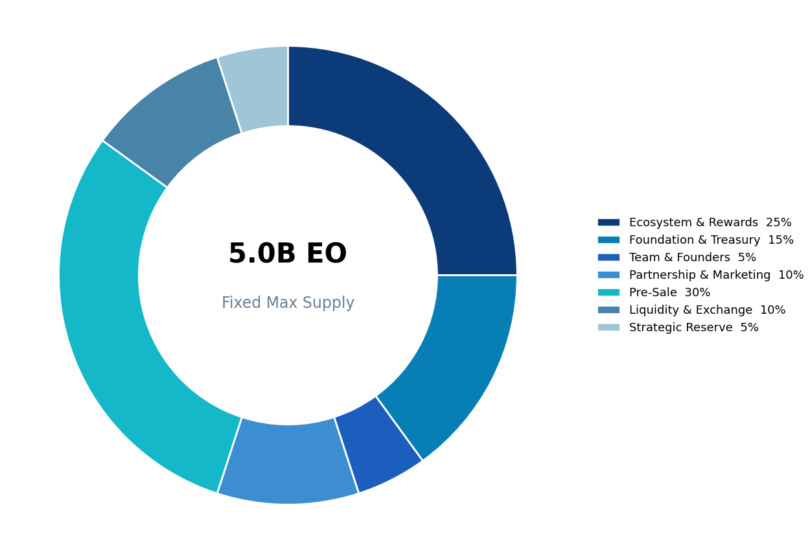
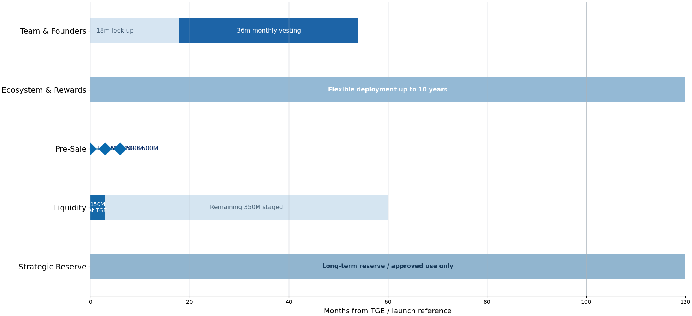

Token Economy
PUBLIC RELEASE · ENGLISH EDITIONEO Token has a fixed maximum supply of 5,000,000,000 EO. After initial issuance, the Mint Authority and Freeze Authority are intended to be permanently revoked so that additional issuance and unilateral account freezing by the operator are not possible.

| Allocation | Share | Amount |
|---|---|---|
| Ecosystem & Rewards | 25% | 1,250,000,000 EO |
| Foundation & Treasury | 15% | 750,000,000 EO |
| Team & Founders | 5% | 250,000,000 EO |
| Partnership & Marketing | 10% | 500,000,000 EO |
| Pre-Sale | 30% | 1,500,000,000 EO |
| Liquidity & Exchange | 10% | 500,000,000 EO |
| Strategic Reserve | 5% | 250,000,000 EO |
Release & Vesting Principles

| Allocation | Operating Principle |
|---|---|
| Team & Founders | 18-month full lock-up followed by 36 months of equal monthly vesting |
| Ecosystem & Rewards | Flexible deployment over up to 10 years based on usage and business scale |
| Foundation & Treasury | No fixed lock-up; purpose-based deployment and quarterly disclosure of major uses |
| Partnership & Marketing | Individual vesting based on project / contract roles and performance conditions |
| Pre-Sale | 1.5B EO allocated in total; three-stage distribution of 500M EO at TGE, 500M at TGE+3 months, and 500M at TGE+6 months |
| Liquidity & Exchange | 150M EO of the 500M allocation supplied initially at TGE, with the remaining 350M introduced in stages |
| Strategic Reserve | Long-term holding in principle; limited deployment only after approval for material strategic needs |
Initial Circulation & Burn
Initial Circulating Supply
| 650,000,000 EO · 13% 500,000,000 EO from the first Pre-Sale distribution (10% of total supply) + 150,000,000 EO of initial liquidity (3%). The full Pre-Sale allocation is 1,500,000,000 EO (30%); the remaining 1,000,000,000 EO is distributed in two stages of 500,000,000 EO at TGE+3 months and TGE+6 months. If actual sales are below the allocation ceiling, actual circulation may be lower than this reference amount. |
Fixed Supply
Maximum Supply: 5,000,000,000 EO
Additional Minting: Not permitted
Mint Authority: Permanently revoked after initial issuance
Freeze Authority: Permanently revoked
Decimals: 6
Burn Policy
The core Token Economy of EO Token is real-world utility rather than burning. EO recovered through ecosystem services may be partially burned, and Treasury-held EO may also be burned following an approval process if needed. A market Buyback & Burn program is not part of the current policy.
A recurring burn program is not intended to begin immediately after TGE. After sufficient real-use data has accumulated - including Shopping Mall payments, event usage and Treasury recovery - an implementation plan may be announced in advance, with the program potentially operating on a semiannual basis thereafter. No minimum supply floor is currently set.
Utility-Driven Value Framework
EO Token's economic value is not presented on the basis of a target price or promised investment return. The intended framework is one in which utility and users expand, real-use demand is formed, maximum supply remains fixed, and tokens recovered through the ecosystem may be recirculated through Treasury, used for operations or partially burned.
| UTILITY GROWTH → TOKEN USAGE → ECOSYSTEM CIRCULATION → SUPPLY MANAGEMENT This framework describes the relationship between real service use and long-term supply management, not a forecast of token-price appreciation. |
Pre-Sale Summary
Thirty percent of total supply, or 1,500,000,000 EO, is allocated to the Pre-Sale. To support initial-circulation stability, the baseline distribution principle is a three-stage release: 500,000,000 EO at TGE, 500,000,000 EO at TGE+3 months and 500,000,000 EO at TGE+6 months. Detailed conditions, including sale price, sale period, USDT payment, KYC/AML and treatment of unsold allocation, are managed separately under Token Sale Terms.